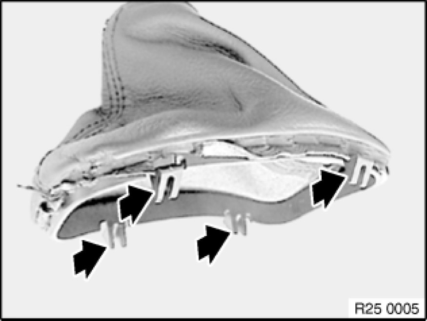

25 16 065 - Replacing gaiter (selector lever cover) for shift tower
25 16 065 - Replacing gaiter (selector lever cover) for shift tower

Necessary preliminary tasks:
- Remove grip 25 16 061 - Replacing grip/knob for shift lever

1. Carefully pull gaiter taut on leather
2. Gently press frame inwards until catch is released
3. Lift out gaiter
Important!
Start removing at top left, otherwise the frame will be damaged.

Installation Note:
Retaining lugs must not be damaged.